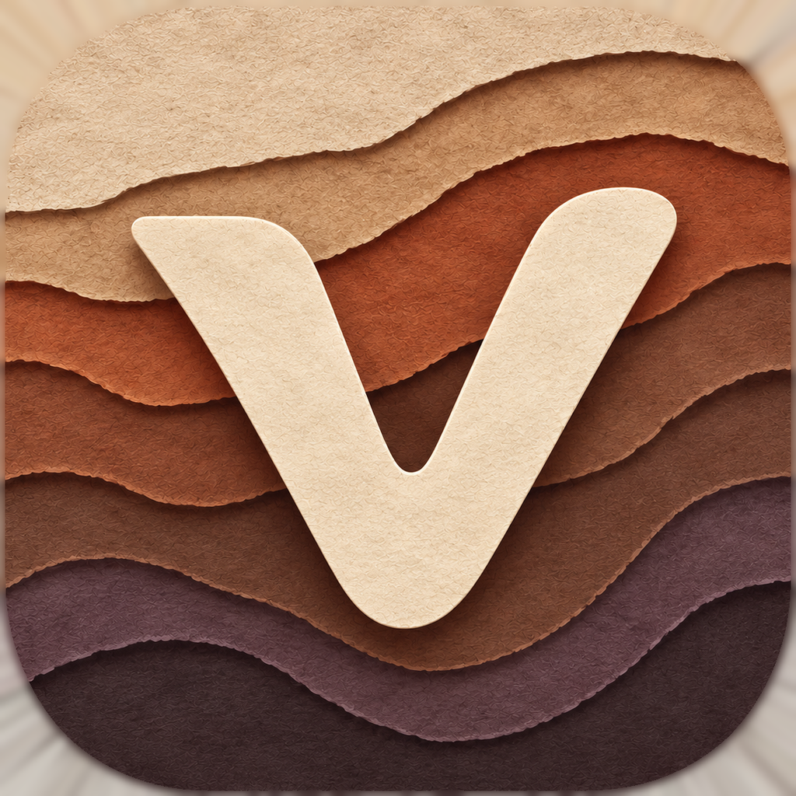
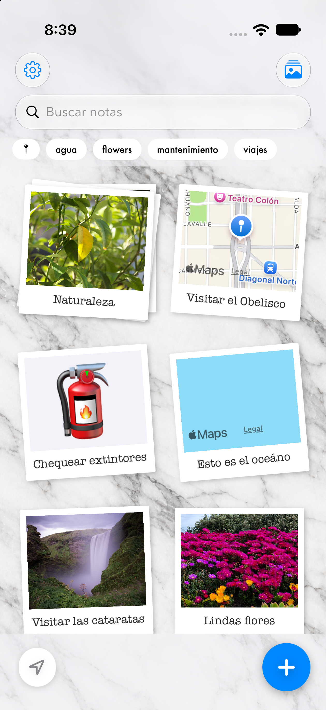
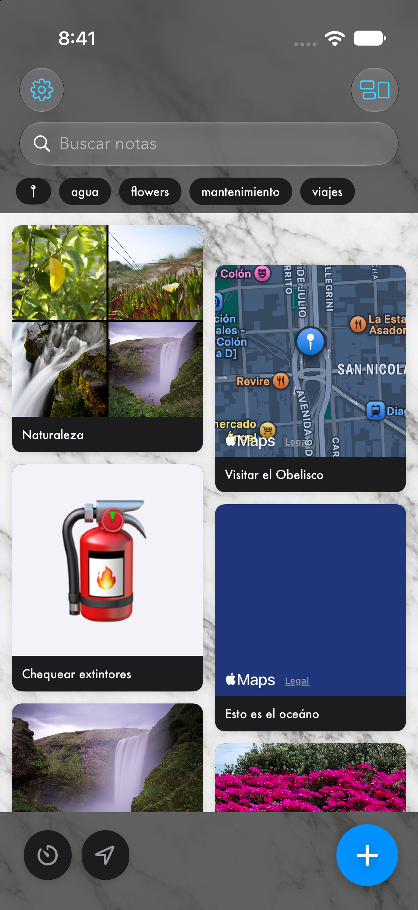
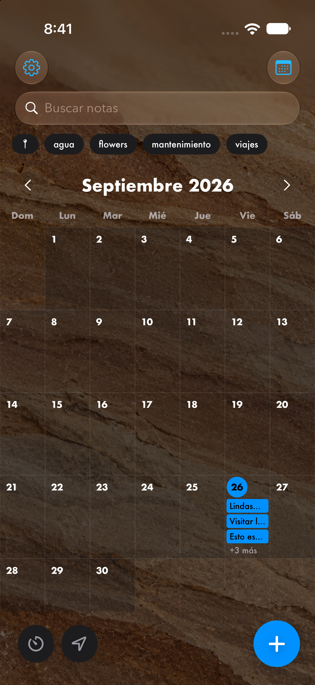
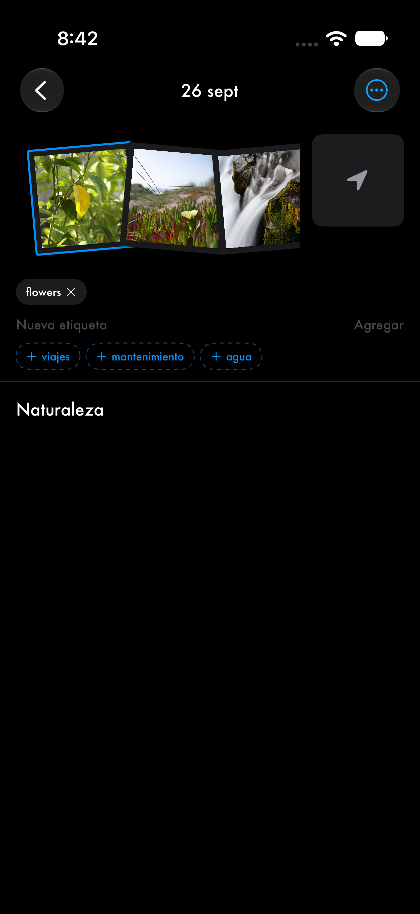
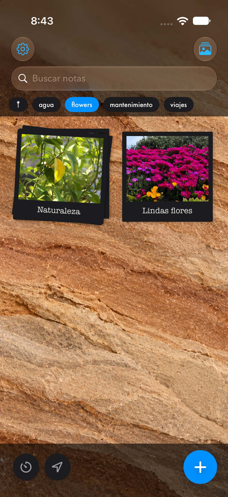
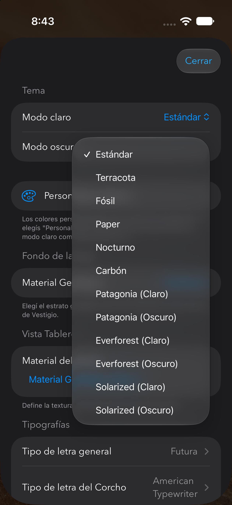
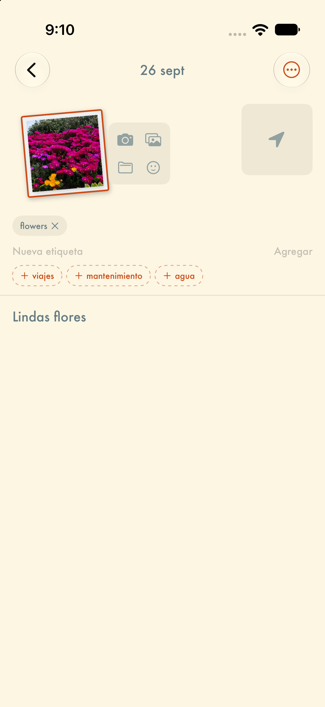
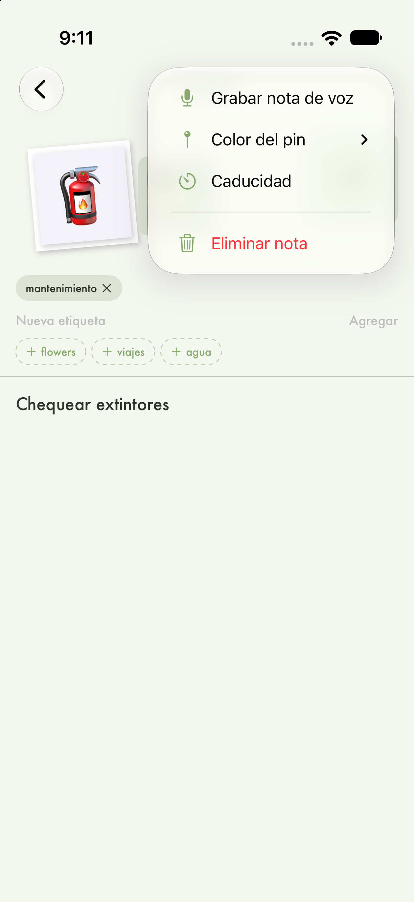

Rastro, huella, lugar.
Guardá lo que encontrás en la calle — una foto, un ticket, una ubicación — antes de que el tiempo se lo lleve. Vestigio arma con eso un mapa, un mural y un calendario de tus propios rastros.
Descargar en App Store Próximamente en App StoreAsignación de ubicaciones a las notas y exploración a través de un mapa interactivo.
Filtro inteligente que detecta y muestra las notas guardadas dentro de tu radio de cercanía actual.
Sistema para asignarle fecha de vencimiento a apuntes temporales (tickets, recordatorios efímeros) con una vista especial para filtrar lo que está por expirar.
Alternancia fluida entre las vistas de Mapa, Tablero, Mural y Calendario.
Guardado rápido de enlaces, fotos y textos desde Safari, la galería o cualquier app nativa mediante el menú "Compartir" de iOS.
Interfaz translúcida personalizable con texturas realistas (Corcho, Granito, Madera, Mármol) y control tipográfico.
Clasificación estructural a través de etiquetas, colores de pines, notas de voz y fotografías.
Almacenamiento 100% offline en el dispositivo vía SwiftData, sin requerir cuentas de usuario ni inicios de sesión, y con soporte nativo para importar o exportar copias de seguridad.







